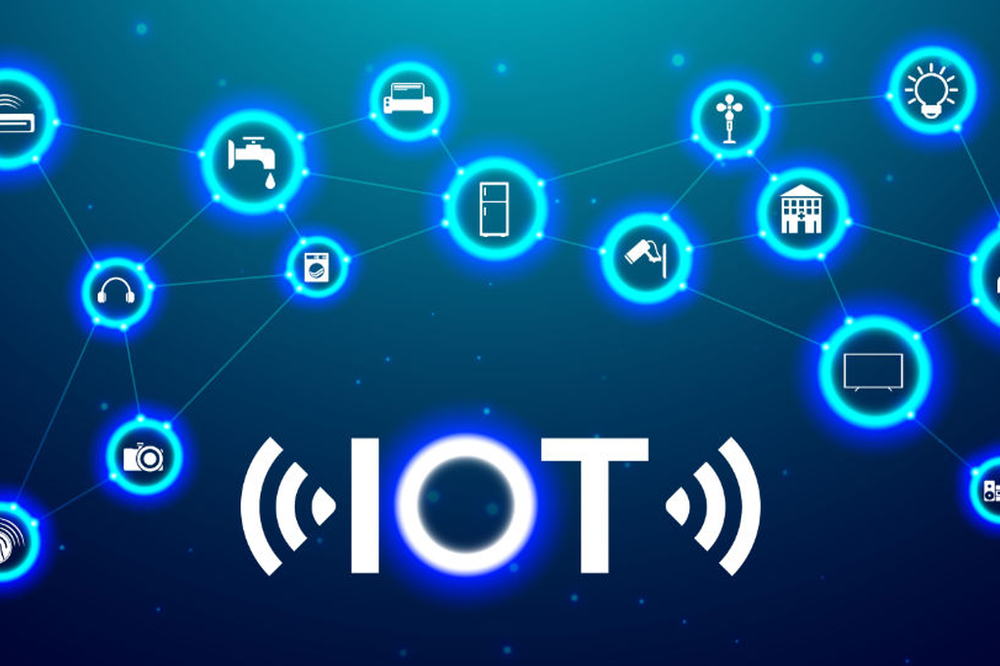

Internet de las Cosas (IoT)
Internet de las Cosas (IoT)
Es un concepto que se refiere a la interconexión digital de objetos cotidianos con internet. Permite que dispositivos físicos, vehículos, electrodomésticos y otros elementos equipados con sensores, software y otras tecnologías, puedan conectarse e intercambiar datos con otros dispositivos y sistemas a través de internet. Esto transforma cualquier objeto en una fuente de información y un punto de interacción en la red.
Se aplican a ciertos elementos
Existen muchas aplicaciones de IoT. Aquí vamos a ver las más reconocidas:
- Portátiles: podría ser el elemento más destacable del Internet de las Cosas para el usuario común. Entre varias alternativas, podemos observar dispositivos como rastreadores deportivos, relojes inteligentes, cascos de realidad virtual, y más.
- Hogares inteligentes: Un sistema de hogar inteligente se enlaza con los aparatos para facilitar la automatización de ciertas funciones y, comúnmente, se gestiona desde lejos. Algunos ejemplos de dispositivos de Internet de las cosas en viviendas inteligentes pueden incluir aparatos de cocina sin cables, equipos de audio que responden al estado emocional, luces inteligentes, cortinas, puertas y ventanas automáticas, medidores de servicios públicos inteligentes, entre otros.
- Ciudades inteligentes: Las ciudades inteligentes utilizan dispositivos de IoT sensores y contadores interconectados, para reunir y examinar información. Esta información puede ser aprovechada para optimizar la infraestructura, los servicios públicos y los servicios.
- Vehículos autónomos: Los vehículos autónomos, en términos generales, poseen una tecnología apoyada en la Internet de las Cosas que transmite datos sobre el automóvil y la ruta que sigue. Los dispositivos dentro del vehículo recopilan y examinan información acerca del tráfico, la movilidad, el entorno circundante y otros factores, permitiendo que el vehículo opere de manera autónoma.
- Agricultura inteligente: La agricultura inteligente implica la utilización de tecnología digital para optimizar las actividades del campo. Por ejemplo, los agricultores tienen la capacidad de emplear sensores, cámaras y diversas herramientas para embellecer sus parcelas y ajustar sus métodos para aumentar la producción.
Internet de las cosas: Ventajas y Desventajas
Los expertos indican que la Internet de las Cosas presenta tanto aspectos positivos como negativos. Por ejemplo:
Ventajas de la IoT:
- Eficiencia: la comunicación entre dispositivos fomenta un funcionamiento más efectivo, otorgando a las personas más tiempo para concentrarse en otras responsabilidades.
- Automatización: la implementación de procesos automáticos conduce a una mayor constancia en las tareas, lo que puede elevar la calidad del servicio y disminuir la necesidad de intervención humana.
- Reducción de costos: una optimización de la eficiencia y la automatización puede reducir tanto los desperdicios como los gastos en personal, haciendo que la producción y entrega de bienes sea más económica.
- Control de calidad: la IoT mejora la interacción entre los distintos dispositivos, promoviendo un control de calidad más efectivo.
- Mayor transparencia: la capacidad de acceder a datos desde cualquier lugar, en cualquier momento y a través de cualquier dispositivo puede facilitar la toma de decisiones y fomentar una mayor claridad.
Desventajas de la IoT:
- Compatibilidad: la falta de normas globales puede ocasionar dificultades en la interacción entre aparatos de diferentes fabricantes.
- Pérdida de empleo: ya que la IoT impulsa la automatización, puede resultar en la eliminación de puestos de trabajo especializados.
- Dificultad: considerando la vasta red de la IoT y la gran variedad de dispositivos que dependen de ella, un solo defecto en el software o hardware puede tener efectos perjudiciales.
- Privacidad y seguridad: en la red de dispositivos conectados, se presentan peligros asociados con los aparatos que recogen y comparten grandes cantidades de información.